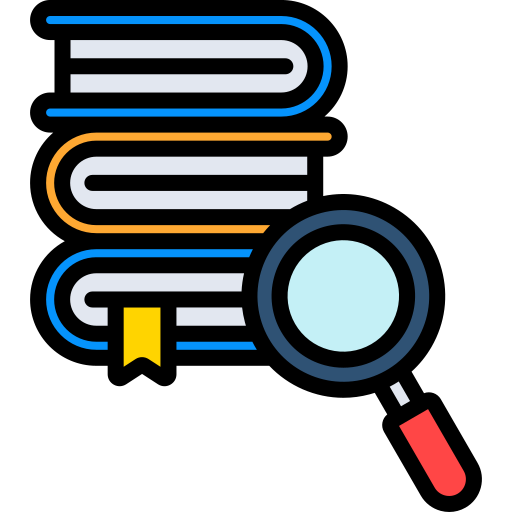

Bibliografía
Amazon Web Services. (2024). ¿Qué es una aplicación web? https://aws.amazon.com/es/what-is/web-application/
Connolly, T., & Begg, C. (2015). Database systems: A practical approach to design, implementation, and management (6th ed.). Pearson Education.
Laudon, K. C., & Laudon, J. P. (2020). Management information systems: Managing the digital firm (16th ed.). Pearson.
MDN Web Docs. (2024). Web applications. Mozilla Foundation. https://developer.mozilla.org/
Pressman, R. S., & Maxim, B. R. (2020). Software engineering: A practitioner’s approach (9th ed.). McGraw-Hill Education.
Sommerville, I. (2016). Software engineering (10th ed.). Pearson Education.
TechTarget. (2024). Web application (web app). https://www.techtarget.com/searchsoftwarequality/definition/Web-application-Web-app
World Wide Web Consortium. (2023). Web standards. https://www.w3.org/standards/
Licenciatura en Sistemas Computacionales
© Copyright 2026. MAYKIN KIMBOR GOMEZ